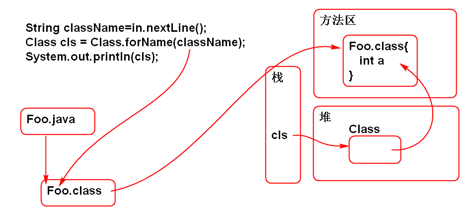
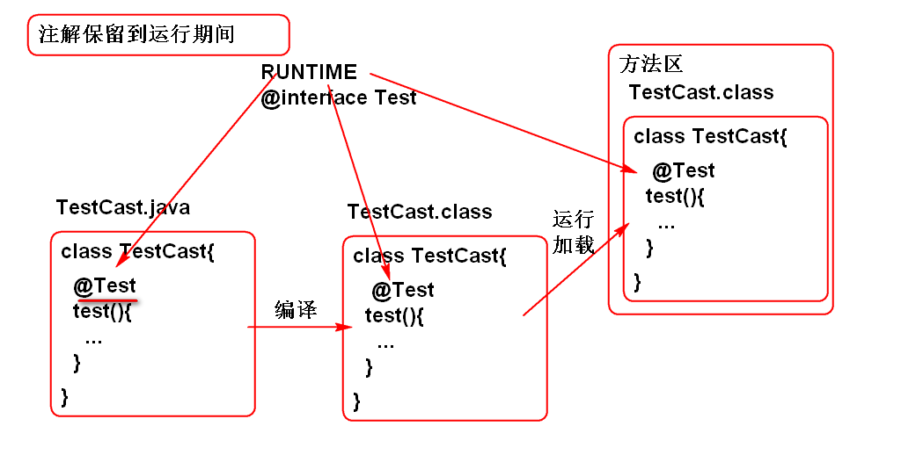

是Java API
反射是Java提供的动态执行API, 能够动态加载类, 动态创建对象, 动态访问属性, 动态调用方法 ...
静态执行: 经过编译以后, 就确定了程序执行次序, 运行期间按照既定次序执行.
如:
Foo foo = new Foo();
int n = foo.times;
System.out.println(n);
动态执行: 在"运行期间"才能确定加载那个类,创建那个对象,执行方法 ...
利用 反射API可以实现动态执行.
API Class cls = Class.forName("类名");
//如下两个方法可以获取 cls 对象, 但是不能体现动态特性
Class cls = Foo.class;
Class cls = foo.getClass();
案例:
Scanner in = new Scanner(System.in);
System.out.print("输入类名:");
String className=in.nextLine();
Class cls = Class.forName(className);
System.out.println(cls);
原理:

在运行期间, 根据任意的类名创建对象.
API
Object obj = cls.newInstance()
提示: 利用类的无参数构造器创建对象, 反射的"构造器API" 可以调用有参数构造器创建对象.
举个栗子:
Scanner in = new Scanner(System.in);
System.out.print("输入类名:");
String className=in.nextLine();
Class cls = Class.forName(className);
System.out.println(cls);
Object obj = cls.newInstance();
System.out.println(obj);
使用步骤:
案例:
Scanner in = new Scanner(System.in);
System.out.print("输入类名:");
String className=in.nextLine();
Class cls = Class.forName(className);
System.out.println(cls);
Object obj = cls.newInstance();
System.out.println(obj);
//找到属性声明信息
System.out.print("属性名:");
String name = in.nextLine();
//动态找到属性声明信息
Field fld = cls.getDeclaredField(name);
System.out.println(fld);
//读取对象的属性: 在一个对象上读取属性的值
//打开访问权限
fld.setAccessible(true);
Object val = fld.get(obj);
System.out.println(val);
经典面试题:
Eclipse的热键菜单, 用什么技术实现.
反射全部的属性:
Field[] getDeclaredFields()
反射全部的属性:
Method[] getDeclaredMethods()
案例: Scanner in = new Scanner(System.in); System.out.print("输入类名:"); String className=in.nextLine(); Class cls = Class.forName(className);
//反射类的全部属性
Field[] fields=
cls.getDeclaredFields();
for (Field field : fields) {
System.out.println(field);
}
//反射类的全部方法
Method[] methods=
cls.getDeclaredMethods();
for (Method method : methods) {
System.out.println(method);
}
在访问private 成员之前使用
e.setAccessible(true);
可以打开访问权限了
案例:
//打开访问权限
fld.setAccessible(true);
Object val = fld.get(obj);
System.out.println(val);
面试题目:
1. Spring 如果给private属性注入值
2. 如果访问类的私有成员
步骤
找到方法的"声明"信息 Method
Method getDeclaredMethod(方法名)
Method m1=cls.getDeclaredMethod("test") Method m2=cls.getDeclaredMethod("test", int.class, String.class);
创建或得到对象
在对象上调用响应方法!
Object method.invoke(对象, 参数...)
Object v = m1.invoke(对象); Object v = m2.invoke(对象, 5, "666");
案例:
Scanner in = new Scanner(System.in);
//动态加载类
System.out.print("输入类名:");
String className=in.nextLine();
Class cls = Class.forName(className);
System.out.println(cls);
//动态创建对象
Object obj = cls.newInstance();
System.out.println(obj);
//动态找到一个方法
System.out.print("方法名:");
String name=in.nextLine();
Method m=cls.getDeclaredMethod(name);
System.out.println(m);
//动态执行方法
m.setAccessible(true);//访问私有
Object val = m.invoke(obj);
System.out.println(val);
原理:

案例:
@Retention(RetentionPolicy.RUNTIME)
public @interface Test {
}
public class TestCase {
@Test
public void demo(){
System.out.println("demo");
}
@Test
public void test(){
System.out.println("test");
}
}
public class Demo03 {
public static void main(String[] args)
throws Exception{
//JUnit 4 原型
Scanner in = new Scanner(System.in);
System.out.print("类名:");
String className = in.nextLine();
//Class 是反射的入口
Class cls = Class.forName(className);
//找到类中全部的方法
Method[] methods =
cls.getDeclaredMethods();
Object obj = cls.newInstance();
for (Method method : methods) {
//动态解析注解
Object a = method
.getAnnotation(Test.class);
System.out.println(a);
if(a!=null){
method.invoke(obj);
}
}
}
}